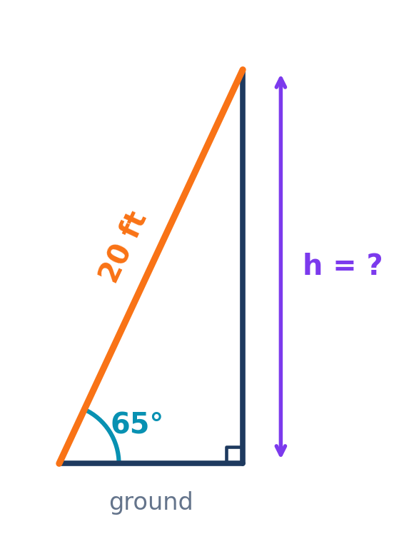

MATH 130 · Module 12
Right Triangle Applications
Concepts, worked examples, student practice, and synthesis
55 minutes · Offline capable
Today’s Learning Roadmap
- 1
model one-triangle applications with SOH-CAH-TOA
- 2
apply elevation, depression, and motion components
- 3
solve complete and two-triangle application problems
Activate · 0.5 minSource: 1
Predict: model one-triangle applications with SOH-CAH-TOA
Predict firstWhat must be labeled before selecting a trig ratio?
Commit to a response before discussion.
Activate · 1.0 minSource: Authored
model one-triangle applications with SOH-CAH-TOA
Concept- Read, draw, label, choose a ratio, solve, and check.
- Inverse trig finds an angle from a ratio.
Explain · 2.5 minSource: 2, 3
Model the Skill: model one-triangle applications with SOH-CAH-TOA
Annotated diagram- A 20 ft ladder makes a $65^\circ$ angle with the ground. Find the height.
- $\sin65^\circ=h/20$.
- $h=20\sin65^\circ\approx18.13$ ft.
- The result agrees with the corrected diagram and is less than 20 ft.

Right triangle ladder diagram with a 20 foot ladder and 65 degree ground angleModel · 3.0 minSource: 4
You Try: model one-triangle applications with SOH-CAH-TOA
Student practiceA surveyor stands 80 ft from a building at 42° elevation. Find the height.
Feedback and solution$h=80\tan42^\circ\approx72.0$ ft.
Practice · 3.0 minSource: 5
Check and Diagnose: model one-triangle applications with SOH-CAH-TOA
Error analysis- Calculator mode must be degrees.
- A leg must be shorter than the hypotenuse.
Self-checkWhat evidence confirms the setup, sign, unit, or magnitude?
Feedback · 2.0 minSource: 6
Pacing checkpointMake It Stick: model one-triangle applications with SOH-CAH-TOA
State the six-step word-problem strategy.
Exit responseAnswer in complete mathematical sentences and identify one remaining question.
Synthesize · 0.5 minSource: 7
Predict: apply elevation, depression, and motion components
Predict firstWhy are an angle of depression and its matching angle of elevation equal?
Commit to a response before discussion.
Activate · 1.0 minSource: Authored
Model the Skill: apply elevation, depression, and motion components
1East component: $300\cos25^\circ\approx271.89$ mi.
2North component: $300\sin25^\circ\approx126.79$ mi.
3$\sqrt{271.89^2+126.79^2}\approx300$ verifies the components.
Model · 3.0 minSource: 9
You Try: apply elevation, depression, and motion components
Student practiceA vehicle travels 300 miles at 25° north of east. Find east and north components.
Feedback and solutionEast: $300\cos25^\circ\approx271.9$ mi; north: $300\sin25^\circ\approx126.8$ mi.
Practice · 3.0 minSource: 10
Check and Diagnose: apply elevation, depression, and motion components
Error analysis- Angles are measured from horizontal unless stated otherwise.
- Use total distance before resolving components.
Self-checkWhat evidence confirms the setup, sign, unit, or magnitude?
Feedback · 2.0 minSource: 11
Pacing checkpointMake It Stick: apply elevation, depression, and motion components
Explain how a horizontal reference line organizes both elevation and component problems.
Exit responseAnswer in complete mathematical sentences and identify one remaining question.
Synthesize · 0.5 minSource: Authored
Predict: solve complete and two-triangle application problems
Predict firstWhat information is shared by two right triangles aimed at the same height?
Commit to a response before discussion.
Activate · 1.0 minSource: Authored
solve complete and two-triangle application problems
Concept- To solve a right triangle, find all missing sides and angles.
- Two-triangle problems share a height and use related horizontal distances.
Explain · 2.5 minSource: 12, 13
Model the Skill: solve complete and two-triangle application problems
Two tower observations are 50 ft apart with elevation angles $53^\circ$ and $31^\circ$. Find the closer distance d and height h.
- $h=d\tan53^\circ=(d+50)\tan31^\circ$.
- $d\approx41.37$ ft and $h\approx54.90$ ft.
- Using the farther distance $91.37$ ft reproduces the same height.
Model · 3.0 minSource: 14
You Try: solve complete and two-triangle application problems
Student practiceSet up, but do not immediately solve, a two-observation tower problem with a 50 ft gap.
Feedback and solutionCloser: $\tan53^\circ=h/d$; farther: $\tan31^\circ=h/(d+50)$.
Practice · 3.0 minSource: 15, 16
Check and Diagnose: solve complete and two-triangle application problems
Error analysis- Keep d and d+50 attached to the correct observation points.
- Show the algebraic distribution step before dividing.
Self-checkWhat evidence confirms the setup, sign, unit, or magnitude?
Feedback · 2.0 minSource: 17
Pacing checkpointMake It Stick: solve complete and two-triangle application problems
Write the shared-height equation that connects the two triangles.
Exit responseAnswer in complete mathematical sentences and identify one remaining question.
Synthesize · 0.5 minSource: 18
Session Summary and Exit Ticket
- State the most important idea from today without looking at your notes.
- Complete one representative setup and identify the step most likely to cause an error.
- Write one question that should be answered before the next assessment.
Exit responseAnswer in complete mathematical sentences and identify one remaining question.
Feedback and solutionUse the objective roadmap to identify any skill that still needs deliberate practice.
Synthesize · 1.5 minSource: 19